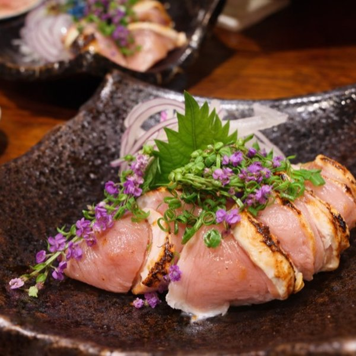
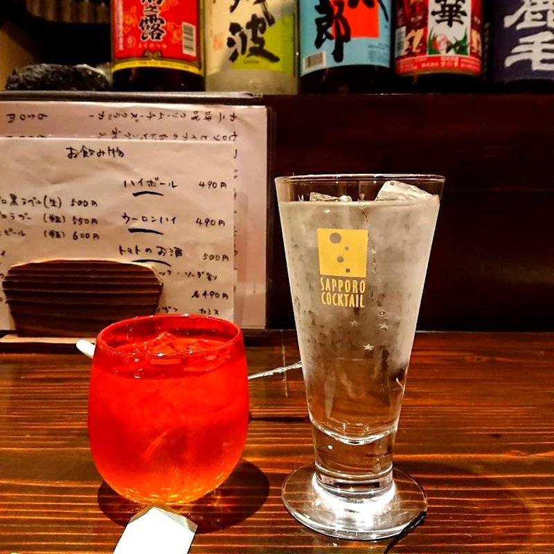

Osaka Tenmangu Shrine: A Complete Visitor's Guide 大阪天满宫：完整参观指南 오사카 덴만구: 완벽한 방문 가이드
Founded in 949 AD, Osaka Tenmangu honors the god of learning — and it's a 5-minute walk from Danke. 建于公元949年的大阪天满宫供奉学问之神，距离だんけ仅5分钟步程。 949년에 창건된 오사카 덴만구는 학문의 신을 모시며, だんけ에서 도보 5분 거리입니다.

Yakitori Parts Guide: What to Order at a Japanese Chicken Skewer Bar 烤鸡串部位指南：如何点菜 야키토리 부위 가이드: 어떤 메뉴를 주문할까
Every cut explained — momo, hatsu, reba, sasami and more. 各部位详解——鸡腿、鸡心、鸡肝、鸡里脊等。 모든 부위 해설 — 모모, 하츠, 레바, 사사미 등.

Izakaya Etiquette: 10 Things Every First-Timer Should Know 居酒屋礼仪：初次光顾必知的10件事 이자카야 에티켓: 처음 방문자가 알아야 할 10가지
Otoshi, ordering customs, counter seats, useful phrases, and how to pay. お通し、点单习惯、吧台座位、常用语及结账方式。 오토시, 주문 방식, 카운터석, 유용한 표현, 계산 방법.

What is Chicken Tataki? Japan's Lightly Seared Chicken Sashimi 鸡肉塔塔基是什么？日本轻炙鸡肉刺身 닭 타타키란? 일본의 살짝 구운 닭고기 사시미
Japan's lightly seared chicken — what it is, why it's safe, and how to eat it. 日本轻炙鸡肉刺身——是什么、为何安全、如何享用。 일본의 살짝 구운 닭고기 사시미 — 정체, 안전성, 먹는 법.

What is Lava Stone Grilling? 熔岩石烧烤是什么？ 용암석 그릴이란?
How volcanic rock and far-infrared heat create the juiciest yakitori. 火山岩和远红外线如何创造最多汁的烤鸡串。 화산암과 원적외선이 가장 촉촉한 야키토리를 만드는 방법.

Tenjinbashi After Dark: Where Locals Eat & Drink 天神桥之夜：当地人的觅食地 텐진바시의 밤: 현지인들의 맛집
Where locals eat and drink along Japan's longest shopping street. 在日本最长的商店街上，当地人在哪里吃喝。 일본에서 가장 긴 상점가에서 현지인들이 먹고 마시는 곳.

Solo Dining in Osaka: An Introvert's Guide to Izakaya 大阪一人食：内向者的居酒屋指南 오사카 혼밥: 내향인을 위한 이자카야 가이드
An introvert's guide to eating alone at an izakaya. 内向者的居酒屋一人食指南。 내향인을 위한 이자카야 혼밥 가이드.

How to Order Sake Like a Local 像当地人一样点清酒 현지인처럼 사케 주문하기
Temperature, flavor profiles, and etiquette for ordering sake. 清酒的温度、风味和点酒礼仪。 사케의 온도, 풍미 프로필, 주문 에티켓.